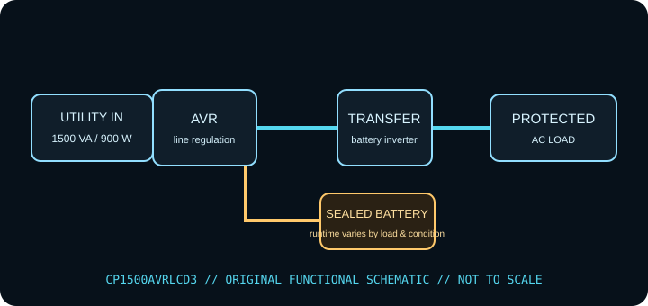

[ LINE-INTERACTIVE UPS // IDENTIFIED MODEL ]
CyberPower CP1500AVRLCD3
CyberPower line-interactive AVR UPS, rated 1500 VA / 900 W. This record describes the identified regional model only. Check the complete nameplate, hardware revision and matching manufacturer documentation before installation or load selection.

ARCHIVAL IDENTIFICATION: Record complete SKU/suffix, input/output labels, serial/date code, hardware revision, battery type/age, accessories, test conditions and manual revision. Similar model names do not establish electrical equivalence.
Exact model specifications
| Manufacturer / exact model | CyberPower CP1500AVRLCD3 (North American model record; verify complete SKU, revision and serial/date label). |
|---|---|
| Topology | Line-interactive UPS with automatic voltage regulation (AVR); supported input fluctuations may be corrected without battery transfer. This is not a standby-only or online double-conversion unit. |
| Capacity / input | 1500 VA / 900 W; 120 V AC, 60 Hz North American version; verify the nameplate and local variant. VA and W are separate limits; stay under both. |
| AC output / waveform | 120 V AC nominal; simulated-sine-wave battery output per the model specification. Utility output passes through line-interactive AVR; inverter supplies the load on battery. |
| Outlets / load assignment | 12 NEMA 5-15R total: six battery-backup + surge-protected and six surge-only. Observe the rear-panel group markings. |
| Battery chemistry / service | Two 12 V / 9 Ah sealed lead-acid batteries; manufacturer-listed user-replaceable pack. Use the specified replacement procedure and matching battery parts. |
| Runtime / test conditions | CyberPower publishes a typical 12 minutes at 50% load (450 W) and 3 minutes at full rated load (900 W). These are reference-curve values, not a guarantee for an aged battery or unlike load. Runtime tests should record connected watts, charge state, battery age/health, temperature and test date. |
| Host signaling / software | USB and serial data interfaces; PowerPanel Personal shutdown/monitoring support. Confirm current software and operating-system support on the manufacturer download page before depending on unattended shutdown. |
| Load compatibility | 120 V / 60 Hz loads within both 1500 VA and 900 W limits. Simulated sine output may not suit every active-PFC supply or motor load; check equipment and UPS documentation. USB charging sockets are not UPS host-data ports. |
Safety, service & limits
- Use only with the grounded voltage/frequency and environment allowed by the complete unit label and current model manual. Never defeat grounding or daisy-chain UPS outputs.
- Do not connect heaters, laser printers, motors or other high-inrush loads unless the manufacturer expressly permits them and their steady-state and startup demand remain within the UPS limits.
- Do not open an energized UPS or work on battery terminals. Sealed lead-acid batteries can deliver destructive fault current; avoid short circuits, damaged/swollen/leaking cells and unapproved replacements. Follow the manufacturer isolation, service and recycling directions.
- Remove damaged equipment from service if the case, cord, plug, grounding, outlet, battery or indicator shows heat, swelling, leakage, cracking, odor, corrosion or other fault. Follow the maker’s safe shutdown guidance.
- Keep ventilation clear, protect the unit from liquid and excessive heat, and test host shutdown and runtime under a controlled load. Battery backup is finite and is not a substitute for code-compliant wiring or an independent data backup.
Manufacturer sources and documentation
- CyberPower — CP1500AVRLCD3 product specifications and downloadsManufacturer information for the named model; confirm revision and regional suffix on the actual unit.
- CyberPower — CP1500AVRLCD3 user manualManufacturer information for the named model; confirm revision and regional suffix on the actual unit.